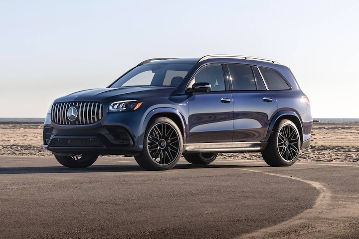
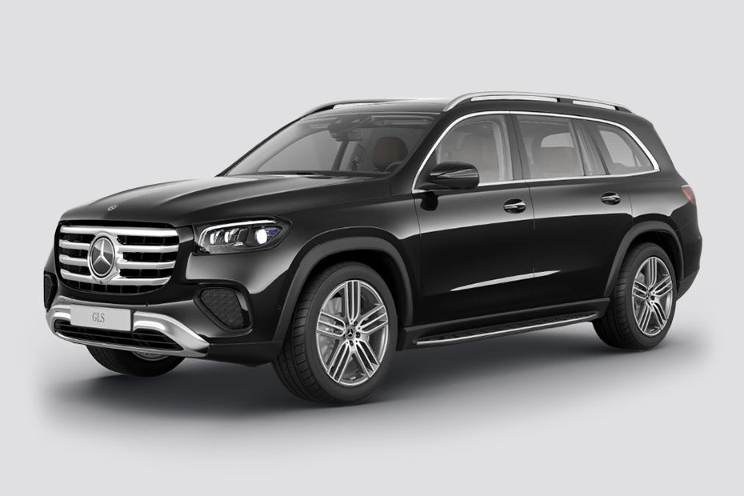
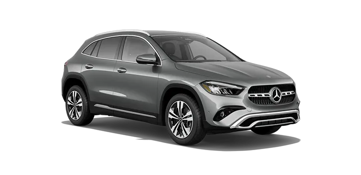
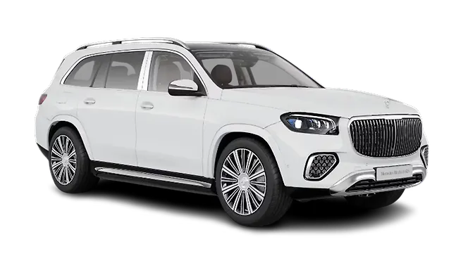
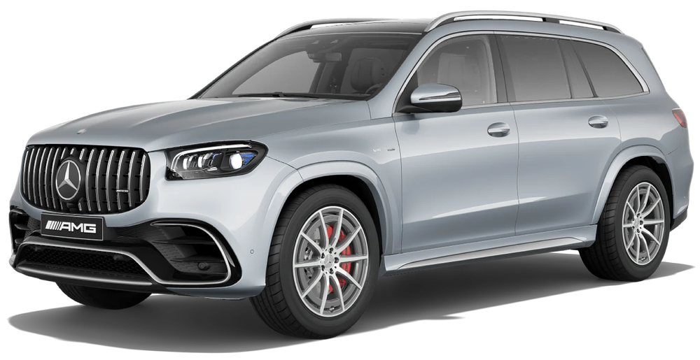

MERCEDES-BENZ
Mercedes-Benz GLS
جميع نسخ مرسيدس GLS مع المواصفات الرسمية مرتبة في صفحة واحدة، لتسهيل المقارنة بين جميع الإصدارات.
جميع نسخ مرسيدس GLS مع المواصفات الرسمية مرتبة في صفحة واحدة، لتسهيل المقارنة بين جميع الإصدارات.

| المحرك | 3.0 لتر 6 أسطوانات مستقيمة تيربو + نظام هجين خفيف |
| عدد الأسطوانات | 6 |
| القوة | 381 حصان |
| عزم الدوران | 500 نيوتن متر |
| ناقل الحركة | 9G-TRONIC |
| نظام الدفع | 4MATIC |
| التسارع (0-100) | 6.1 ثانية |
| السرعة القصوى | 250 كم/س |
| عدد المقاعد | 7 |
| نوع الوقود | بنزين |

| المحرك | 3.0 لتر 6 أسطوانات مستقيمة تيربو ديزل + نظام هجين خفيف |
| عدد الأسطوانات | 6 |
| القوة | 367 حصان |
| عزم الدوران | 750 نيوتن متر |
| ناقل الحركة | 9G-TRONIC |
| نظام الدفع | 4MATIC |
| التسارع (0-100) | 6.1 ثانية |
| السرعة القصوى | 250 كم/س |
| عدد المقاعد | 7 |
| نوع الوقود | ديزل |

| المحرك | 4.0 لتر V8 توين تيربو + نظام هجين خفيف |
| عدد الأسطوانات | 8 |
| القوة | 517 حصان |
| عزم الدوران | 730 نيوتن متر |
| ناقل الحركة | 9G-TRONIC |
| نظام الدفع | 4MATIC |
| التسارع (0-100) | 4.9 ثانية |
| السرعة القصوى | 250 كم/س |
| عدد المقاعد | 7 |
| نوع الوقود | بنزين |

| المحرك | 4.0 لتر V8 توين تيربو + نظام هجين خفيف |
| عدد الأسطوانات | 8 |
| القوة | 557 حصان |
| عزم الدوران | 730 نيوتن متر |
| ناقل الحركة | 9G-TRONIC |
| نظام الدفع | 4MATIC |
| التسارع (0-100) | 4.9 ثانية |
| السرعة القصوى | 250 كم/س |
| عدد المقاعد | 4 أو 5 |
| نوع الوقود | بنزين |

| المحرك | 4.0 لتر V8 توين تيربو + نظام هجين خفيف |
| عدد الأسطوانات | 8 |
| القوة | 612 حصان |
| عزم الدوران | 850 نيوتن متر |
| ناقل الحركة | AMG SPEEDSHIFT TCT 9G |
| نظام الدفع | AMG Performance 4MATIC+ |
| التسارع (0-100) | 4.2 ثانية |
| السرعة القصوى | 280 كم/س |
| عدد المقاعد | 7 |
| نوع الوقود | بنزين |